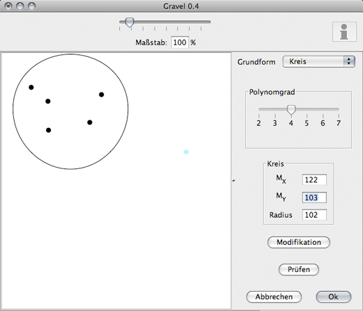
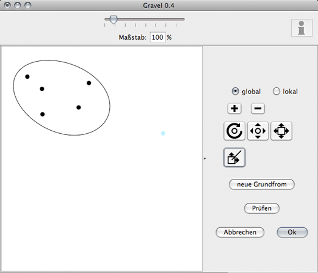
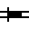

Dialog: Der Umriss einer Hyperkante
Der Umriss einer Hyperkante wird in zwei Schritten erzeugt: Zunächst wird eine Grundform erstell, die dann modifiziert werden kann. Wird der Dialog für den Umriss mit einer Hyperkante aufgerufen, die bereits einen Umriss hat, so beginnt gleich die Modifikation.
Beide Modi haben drei gemeinsame Buttons: „Prüfen“ zur Validierung des Umrisses sowie „Abrechen“ und „Ok“ zum Verwerfen bzw. Übernehmen des aktuellen Umrisses. Zum übernehmen muss ein nichtleerer Umriss existieren. In der Darstellung werden alle bisherigen Hyperkantenumrisse sowie alle nicht zur aktuellen Hyperkante gehörenden Knoten kaum sichtbar gezeichnet, außer, wenn Knoten nach dem Prüfen im Umriss liegen. Anstelle der Liste auf der rechten Seite werden Parameter eingeblendet.
Erzeugen eines Umrisses

Abbildung 1: Erzeugen eines Umrisses
Hier mit der Grundform des KreisesDas Erzeugen eines Umrisses ist der erste Schritt zu einem Umriss. Dieser Modus wird auch verwendet, wenn ein Teil des Umrisses ersetzt werden soll, dann steht allerdings lediglich die Interpolation zur Verfügung und deren Grad ist durch den bisherigen Umriss gegeben. Für die drei Grundformen gibt es jeweils verschiedene Parameter, um die Erzeugung zu beeinflussen:
- Kreis
- Hierbei wird der Polynomgrad auf 4 festgelegt. Dann kann durch Angabe eines Mittelpunktes und eines Radius der Kreis angegeben werden. Alternativ kann er auch mit der Maus aufgezogen werden, die Felder auf der rechten Seite werden dann mit den entsprechenden Werten gefüllt.
- Interpolation
- Neben dem Polynomgrad kann noch spezifiziert werden, wo neu erzeugte Punkte im Vektor der Interpolationspunkte eingefügt werden sollen, am Ende oder zwischen den zwei aufeinanderfolgenden Interpolationspunkten, bei denen der neue Punkt am nächsten an der Verbindungsstrecke dran liegt. Jeder linke Mausklick fügt einen neuen Punkt ein, ein Rechtsklick auf einen Punkt entfernt diesen.
- konvexe Hülle
- Hier ist lediglich der Polynomgrad notwendig, basierend auf den Knotenpositionen, dem Innenabstand und diesem Grad wird dann der Umriss berechnet.
Mit dem Button „Modifikation“ gelangt man in den zweiten Modus zur Modifikation des erstellten Umrisses.
Modifizieren eines Umrisses

Abbildung 2: Modifikation eines Umrisses
Hier wurde der erzeugte kreis zu einer Ellipse verformt.Da es in diesem Modus sehr viele Buttons gibt, schauen wir uns die einmal kurz alle einzeln an:
- global und lokal
- Mit diesem Optionsfeld wechselt man zwischen dem globalen und dem lokalen Bearbeitungsmodus. Im globalen Modus werden die Aktionen auf den gesamten Umriss angewandt. Im lokalen Modus muss zunächst ein Bereich des Umrisses gewählt werden, alle Modifikationen wirken dann nur auf diesem Bereich.
- +
- Dieser Button ist nur im globalen Modus verfügbar. Er schaltet die Anzeige des Knotenvektors an; es werden dann die Positionen auf der Kurve angezeigt, an denen die Knoten auf der Kurve liegen. Durch anklicken der Kurve wird an der Stelle ein Knoten eingefügt.
- -
- Analog zum „+“-Button wird hier der Modus zum Entfernen von Knoten aktiviert. Kann ein Knoten nicht entfernt werden, passiert nichts, andernfalls wird er entfernt. Dabei kann sich die Kurve (unter Umständen sogar stark) verändern. Man kann jedoch jede Aktion stets rückgängig machen.
Jede der folgenden Aktionen verläuft durch Ziehen, wobei der Ursprungspunkt $p$ des Ziehens und der Richtungsvektor $v$ vom Ursprung zur aktuellen Mausposition jeweils in der Berechnung verwendet werden:

- Rotiert den Umriss (bzw. den lokalen Bereich) um den Punkt $p$ und zwar um den Winkel, der zwischen der positiven $X-$Achse im Uhrzeigersinn zur Richtung $v$ vorliegt. $v$ wird dabei auch eingezeichnet, um dies zu verdeutlichen.

- Skalieren der Kurve (bzw. des lokalen Bereichs) mit dem Fixpunkt $p$. Die Skalierung ergibt sich aus dem Verhältnis von $v$ zur Größe der ursprünglichen Kurve. Ist also $v$ nahe der Kurve, ergibt sich etwa ein Faktor von $1$. Die Richtung wird dabei ignoriert.
- Skalieren mit Richtung. Verläuft analog zur Skalierung (dem vorherigen Icon), nur dass lediglich in Richtung $v$ skaliert wird. Die Richtung orthogonal zu $v$ bleibt unverändert. So können beispielsweise aus Kreisen Ellipsen geformt werden.

- Verschieben. Der Umriss (bzw. der lokale Bereich) wird um $v$ verschoben.
Ist keiner dieser Modi aktiv, so kann die Kurve verändert werden, indem direkt auf der Kurve mit dem Ziehen begonnen wird, dann wird dieser Punkt an die aktuelle Mausposition verschoben. Aufgrund der lokalen Eigenschaften der NURBS"=Kurven hat dies ebenfalls nur lokalen Einfluss. Im lokalen Modus gibt es drei weitere Icons, die zur Auswahl der Teilkurve dienen:
- 
- Setzen des Startpunktes der lokalen Bereichs. Start- und Ende sind nicht direkt unterscheidbar, die Darstellung auf den Icons entspricht folgender Situation:
Ist die Kurve im Uhrzeigersinn definiert -- also bei der Interpolation die Reihenfolge der Knoten im Uhrzeigersinn gegeben worden, sonst ist das stets der Fall -- so verläuft die Auswahl ebenso im Uhrzeigersinn. Dann entspricht die Darstellung auf dem Startpunkt-Icon der Situation, dass der Startpunkt auf einer horizontalen Linie der oberen Umrisshälfte liegt.
Jeder Mausklick wird dabei auf die Kurve projiziert und dieser Punkt als neuer Startpunkt verwendet.

- Invertieren. Die Punkte Start und Ende werden vertauscht, was in der Auswahl genau des Kurvenanteils resultiert, der vorher nicht der lokale Bereich war.

- Setzen des Endpunktes. Analog zu den Ausführungen des Startpunktes, nur bezeichnet dies dann das andere Ende des Teilstücks.
Ist hier keiner der Modi aktiv, so wird im lokalen Modus bei jedem Klick bzw. Ziehen abwechselnd Start und Ende der Kurve gesetzt. Der Button „neue Grundform“ erstellt eine neue Grundform wie folgt:
- im globalen Fall
- gelangt man zu dem zurück, was bereits vorgestellt worden ist: Der Erzeugung einer kompletten neuen Grundform.
- im lokalen Fall
- wird eine neue Grundform des lokalen Bereichs erzeugt, so dieser existiert und groß genug ist (man benötigt einen gewissen zu ersetzenden Teil). Die Interpolationspunkte definieren dann eine Kurve, die den lokalen Bereich ersetzt und an den Übergängen (Start- und Endpunkt des lokalen Bereichs) wieder stetig ist. Dabei ist der Grad der Kurve bereits gegeben.